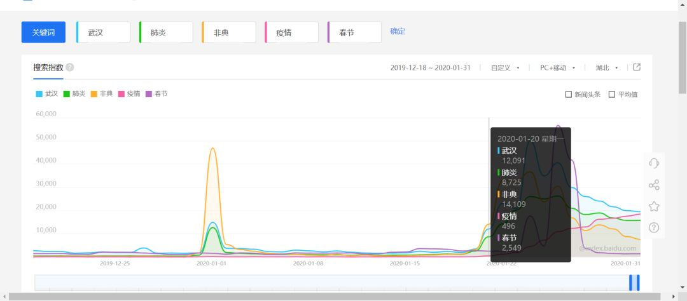

肺炎日记|2月1日：全国病例破万 社会力量参与抗疫呼声不止
原文链接 备份链接 【财新网】（记者 丁捷 综合）2020年2月第1天， 新型冠状病毒确诊患者数量已突破万人。仅次于武汉的重疫区——湖北黄冈下达“史上最严出行令”，2月1日起，严格控制市区居民出行。每户家庭每两天可指派1人上街采购生活物 …

今天是2月2日，月相为53%的上弦月。
It is February 2 with a 53 percent of First Quarter.
距离满月还有 7 天。
There are 7 days until Full Moon.
文 || 文氓
内心有暴风雨在咆哮，它在你的眼前爆炸
内心在破碎，河流变干涸
当一切最终消失的时候，不要告诉我
因为我只剩下你
“All I Have Left is You”, The Offspring.
我的女朋友家在武汉，事实上在英国读书的她已经很多个春节没回过武汉了。
跨年那天她跟我说怀念国内的春节，我揶揄她若是身在国内她断不会向往过年的氛围的。全世界在这一天分批次地推杯换盏，武汉出现不明肺炎的零星消息在推送栏里被压到了最后一排。十几个小时后宿醉逐渐清醒，推送栏最后一排的标题悄然变成了《八名造谣者被依法查处》。
此后的日子她周旋于论文和报告，以及和纵队的同志们一起筹办的《唐人街探案3》英国首映，忙得不亦乐乎。她和这里的仅有的交集只是同样不亦乐乎地转发首映宣传文案的家人们。而则我很庆幸在这期间收到了他们寄来的腊肉，直到今天也没吃完。武汉三镇海晏河清、安乐祥和；净网工作重拳出击，成效显著。非典“谣言”在大海里泛起的涟漪在一天之内就被消弭，只剩下那碗蝙蝠汤静静地发酵。
直到一月二十一日，女友和家人才第一次就疫情进行通信。彼时的武汉已经确诊了198例不明肺炎病例，但他们的反应并不显得迟缓——搜索引擎的数据显示，在辟谣后，“非典”和“肺炎”等词条的搜索热度迅速回落，“春节”词条的搜索指数一直显著高于疫情相关词条，直到二十日，新闻联播首次播出了疫情状况，“肺炎”搜索量才超过“春节”，在全国和湖北范围内均为如此。这意味着哪怕在湖北当地，对疫情的关注也没有显著早于全国平均。

△ 全国范围关键词搜索指数

△ 湖北范围关键词搜索指数
在辟谣后的日子里，他们周围人纷纷摘下了口罩。小年过后年味渐浓，从医院传来的风言风语和“休市”的海鲜市场一起成为了茶余饭后的都市传说，而“造谣者”们的遭遇则为这传说平添了几分禁忌色彩。大风起于青萍之末，风来了，青萍却被攥得死死的。
封城前的二十多天里，除了警备森严的大院，武汉和全国都是信息的真空。而二十号以后，信息流就像封城前得知消息匆匆离汉的人潮一样，涌向全国各地。我时常在想，这些信息究竟像什么，今天我想到了个歪解：像混着酵母扔进玻璃罐的葡萄——没人知道它会酿出东西来。在移动互联终端时代的第一次公共卫生事故中，信息的葡萄在罐子里肆意地反应。最近发生的事情实在太多太乱，太让人捉摸不透。发表时间耐人寻味的学术期刊到能“抑制”病毒的万能双黄连；年产量108亿件的口罩到一问三不知卫健委主任；从账目诡异的红十字会到盆满钵满的莆田系医院；从被打断的1000万人央视直播到“定向拨付”的3M口罩；从被饿死的脑瘫儿到死于“普通肺炎”的患者。哪怕用最没有技术含量的简单罗列，都要在键盘上花去不少时间，若是试图梳理每一件事背后的前因后果，更是想想就头疼。
随手打开电视，看到官员在央视记者前的窘态。想起2003年非典的时候，后来那个段子里比阎王更吓人的老王从海南任上火线进京，上任十天接受《面对面》采访。老王雄姿英发，激扬澎湃。“军中无戏言。我要求他们在汇报的时候，一就是一。打个比方说，明天某家医院可以收治病人多少人，必须精确到个位数。要是到时进不了，那就是具体负责此事的人员的责任。”那会儿的北京到处都是消毒水的味道。一个月之后，葡萄酿出了酒。
离封城已经过去了十天，武汉物价以外的一切都习惯了静止。城市的街景空得像售楼处的大沙盘，不需要地铁、公交和轮渡，穿梭街头的外卖员就足以充当沙盘里象征性的点缀，支撑着这座城市气息微弱的市场脉搏，支撑着900万人在家中的苦中作乐。
说起苦中作乐，我想起那天白清扬聊起了这个话题，他的话我深以为然：“我觉得中国人有一种无论什么苦难都可以戏谑化的巨大力量。我觉得应该有人研究过这种群众行为，某种意义上哪个民族对苦难戏谑化的能力越高，哪个民族文化的传递就会越坚挺。”我有时在想，如果她此时身在武汉，我会怎样陪她苦中作乐，我会在封城前勇敢地戴上三层口罩当个逆行者吗？——机票倒的确便宜。会跟她在家学着做过早的吃食吗？会在她家的藏书堆里找到两沓有趣的老照片吗？会到时间打开窗户唱红歌吗？……若是胆子更肥些，我还可以溜到雷神山的工地里转转，兴许眼前就是台网红叉车。
她刚刚对我说，快一年没回武汉了，想回去了。我说那我陪你回去。恍然间眼前变成了十七年前，五岁的她正奋力写着小学的第一篇作文：我的男朋友家在北京。
抗疫特辑文章
责任编辑：沙士淳、白清扬。
排版：白清扬。
封面图：唐颂。
首图：张天鹤、白清扬。

纵队队长
长按二维码向我转账
受苹果公司新规定影响，微信 iOS 版的赞赏功能被关闭，可通过二维码转账支持公众号。
文章已于修改
原文链接 备份链接 【财新网】（记者 丁捷 综合）2020年2月第1天， 新型冠状病毒确诊患者数量已突破万人。仅次于武汉的重疫区——湖北黄冈下达“史上最严出行令”，2月1日起，严格控制市区居民出行。每户家庭每两天可指派1人上街采购生活物 …
原文链接 备份链接 我住在汉口，是这次疫情的重灾区。那个被查出疫情源头的华南海鲜市场，就在火车站对面，离我家大概20公里。我希望疫情早日结束，对我们国家的经济影响小一些，所有人都能够平安和健康。 口述 | 小 玲 整理 | 沈 林 我叫小 …
原文链接 备份链接 封城已过去一周，在这个谈武汉人、湖北人色变的时候，我们想要好好看一看他们。今天我们挑选的几篇读者来稿，围绕着湖北的武汉和黄冈，讲述他们在旋涡和风暴中心的日子。他们有些住在城市，有些住在乡村和小镇。环境的不同给了他们不 …
原文链接 备份链接 一线护士周玲：疫情结束后，想深吸一口不戴口罩的空气丨亲历新冠肺炎 2020-01-30 12:23 作者：陈雪波 卢志坤 来源：中国经营网 本报记者 陈雪波 卢志坤 “这是我穿过最舒服、最好看的鞋子。我们隔离病毒但不隔 …
原文链接 备份链接 大家好，我是田静。 新型冠状病毒疫情发生后，除了国内民众举全国之力抗击病毒外，海外华侨华人也纷纷发起募捐，用自己的方式表达对祖国疫区同胞的牵挂。 但是，随着疫情影响的加剧，继英国暂停中英航班后，已经有20个国家，作出了 …